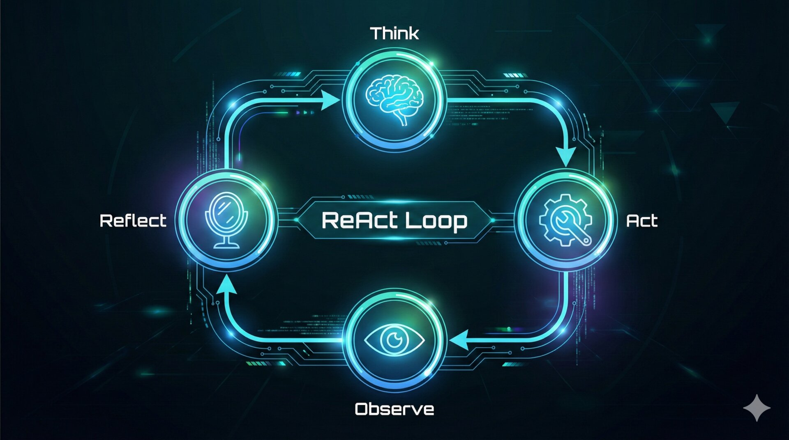
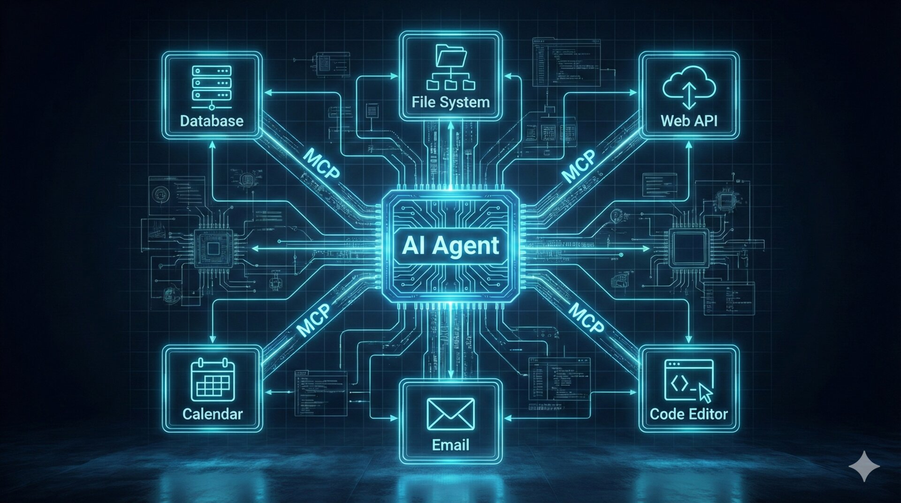
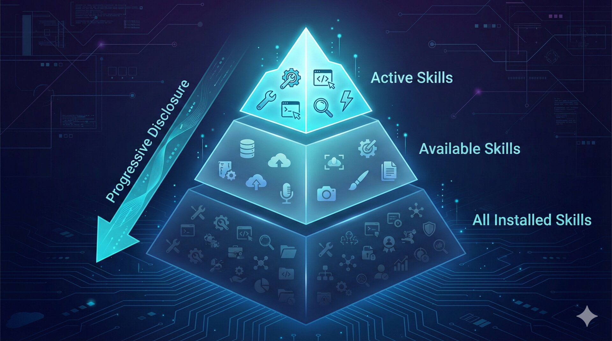
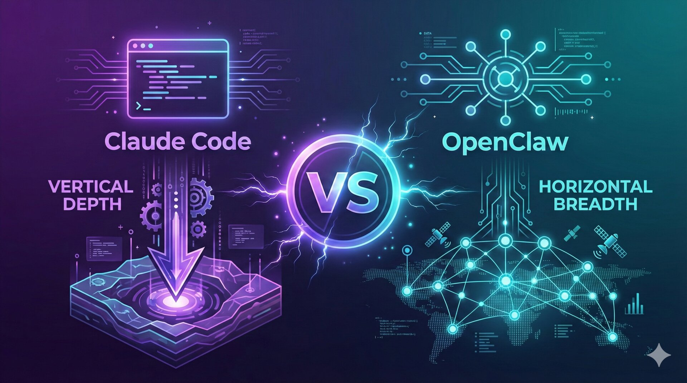

一篇文章讲透 LLM、RAG、Agent、MCP、PTC、Skills 的技术本质
在理解 Agent 之前，我们先认识它的核心引擎：大语言模型（LLM）。
他读过维基百科的每一篇文章、GitHub 上的每一行代码、Reddit 上的每一条帖子、豆瓣上的每一篇书评。他的知识面广到不可思议——上知天文下知地理，能写诗也能写代码。但他有个特点：他不会上网搜索，只能凭记忆回答。你问他什么，他就从记忆里找最合理的答案拼给你。有时候记忆模糊了，他甚至会自信满满地「编」一个听起来很对的答案——这就是我们说的「幻觉」(Hallucination)。
更准确地说，大模型的本质是一个概率预测引擎——给定前面所有的文字，预测接下来最可能出现的词。它不"理解"你的问题，也没有一个"数据库"去查询答案；它做的事情更接近于：基于训练时见过的海量文本模式，计算出在当前语境下，哪个词接下来出现的概率最高。这个过程看起来像是在"思考"，实际上是极其复杂的模式匹配与统计推断。
大模型不是逐字阅读的，它把文本切成一个个小块——Token。一个汉字通常是 1-2 个 Token，一个英文单词是 1-3 个 Token。"你好世界" ≈ 4 个 Token。模型的计费、速度、上下文长度，都以 Token 为单位衡量。你可以把 Token 理解为 AI 的「阅读单位」。
这是模型一次能「看到」多少内容。就像人的工作记忆——你一次能同时记住多少东西。GPT-4 Turbo 有 128K Token 的窗口（约 10 万字），Claude 有 200K Token。窗口越大，模型能处理的文本越长——可以一次读完一本小说，或者分析整个代码库。
当你向 AI 提问时，模型做的事情叫「推理」。它不是从数据库里查答案，而是根据你的输入，逐词预测最可能的下一个词。就像补全句子——"今天天气真"→"好"。这个过程每秒计算数十亿次浮点运算，需要强大的 GPU 算力支撑。
本质上，大模型就是一个超级复杂的「文本接龙」机器：
2017 年，Google 发表了划时代的论文《Attention Is All You Need》，提出了 Transformer 架构。它的核心创新是自注意力机制（Self-Attention）——让模型在处理每个词时，能「关注」到输入中其他所有词的信息，而不是像传统 RNN 那样只能顺序处理。
举个例子：在句子"小明把苹果给了小红，因为她饿了"中，模型需要理解"她"指的是"小红"。自注意力机制让模型能直接建立"她"和"小红"之间的关联，不管它们隔了多远。
让 AI 查资料再回答，而不是全靠记忆。
RAG（Retrieval-Augmented Generation，检索增强生成）的核心思想很简单：与其让 AI 死记硬背所有知识，不如在回答前先让它「查资料」。就像一个聪明的学生在考试中被允许翻书——他不需要背下所有内容，只需要知道去哪找、怎么用。
RAG 的技术实现背后依赖向量检索：先把文档切成小段落，每段用嵌入模型（Embedding Model）转换为一个高维向量（可以理解为一串数字，代表这段文字的"语义指纹"）。用户提问时，也将问题转为向量，然后在向量数据库中找到语义最接近的文档片段。这种检索方式不是靠关键词匹配，而是靠语义相似度——即使用户的问法和文档的措辞完全不同，只要意思相近就能命中。
传统的 Chunk + Embedding + 向量数据库模式虽然有效，但在实际落地中有让人头疼的调优难题。
① 分块策略调优痛苦：文档切得太小缺乏上下文，切得太大引入无关信息。更麻烦的是，不同类型的文档（合同、技术文档、财报）需要完全不同的分块策略，没有一种"万能分法"能适配所有场景。Chunk Size 选 256 还是 512？重叠率设多少？每种文档都要反复试验才能找到"还算凑合"的参数。
② Embedding 选型与阈值调优：用哪个 Embedding 模型？通用模型对专业术语效果差，垂直领域模型又覆盖不了多场景。相似度阈值设 0.7 还是 0.8？设高了漏掉答案，设低了引入噪音。整个预处理管道（文档解析 → 分块 → Embedding → 入库）任何一步出问题，最终效果就大打折扣。
③ 大模型只做最后一步：在传统 RAG 中，检索决策完全由固定算法完成——大模型只是拿到检索结果后做总结。它没有机会参与"该搜什么关键词""该看哪个文件""这次检索结果不够精准要不要换个策略重试"这些决策。
④ RAG 的未来方向：正如 LlamaIndex 创始人 Jerry Liu 所说——"RAG / 检索本身没死，但死的是固定 Chunk + Embedding 那套模式。如果 Agent 可以动态地扩展文件周围的上下文，那过度纠结数据块大小就没有意义了。"未来的检索可能会被 Skills 这类 Agent-native 的检索方式逐步替代——AI 自己决定搜什么、怎么搜、结果不好怎么重试，而不是靠工程师手工调优一套脆弱的预处理管道。后文 Skills 章节会详细介绍这种新范式。
Agentic RAG 是传统 RAG 的进化方向——让 AI 不只是被动接收检索结果，而是主动参与整个检索过程。它的工作模式更接近人类查资料的方式：
定位领域 → 分析用户问题，结合知识库目录索引，判断答案可能在哪个领域（文件夹）。定位文件 → 在目标目录中用关键词筛选可能相关的文件。定位内容 → 打开相关文件，只读取跟问题相关的段落，而非全文。智能重试 → 如果首次检索结果不理想，AI 会自动切换关键词或扩大搜索范围重试。
这种"渐进式检索"不需要预建向量索引，更轻量简单。虽然首次检索可能比传统 RAG 慢，但检索结果更精准——因为 AI 参与了分词、上下文匹配和策略调整的全过程。后文的 Skills 章节会详细介绍如何用 Skill 实现 Agentic RAG。
这是 AI 应用最激动人心的前沿。也是理解 2026 年 AI 生态的关键。
"Agent"这个词在 2025 年被严重滥用了。几乎每个 AI 产品都自称"Agent"，但大多数只是套了个壳的聊天机器人。要判断一个系统是不是真正的 Agent，有三个硬标准：
如：豆包、ChatGPT 网页版。你问它答，一问一答。它不会主动做任何事，也无法操作外部系统。它只能「说」，不能「做」。像一个只能用嘴的顾问——能给你建议，但帮不了你干活。
如：Office Copilot、GitHub Copilot。在你的工作流程中提供辅助——帮你补全代码、润色文案、总结邮件。但它是被动的，需要你一步步引导。它是「副手」，不是「主角」。
如：Claude Code、OpenClaw、Manus。你给它一个目标，它自己规划步骤、调用工具、执行动作、检查结果、自我纠错。它能独立完成多步骤的复杂任务，像一个能自主工作的全职员工。
① 会规划：能把一个大目标拆解成多个具体步骤。你说"帮我调研竞品并写一份分析报告"，它能自己拆解为：搜索竞品信息 → 整理数据 → 分析优劣势 → 撰写报告。
② 会用工具执行动作：不只是生成文字，还能实际操作——调用 API、读写文件、执行代码、操作浏览器。能把想法落地为行动。
③ 自我检查与迭代：执行完一步后，会检查结果是否符合预期。如果代码报错，它会分析错误、修改代码、重新运行。这种"自我纠错循环"是 Agent 与 Chatbot 的本质区别。
用一个更直观的对比来理解：Chatbot 像一个只能打电话的朋友——你问他路怎么走，他告诉你方向；Copilot 像一个副驾驶——你开车，他帮你看地图、提醒路况，但方向盘在你手里；Agent 像一个代驾司机——你告诉他目的地，他自己开车、选路线、加油、处理突发状况，直到把你送到目的地。Agent 与前两者的根本区别在于：它拥有自主决策权和行动闭环。
Agent 的工作方式不是"接收指令 → 输出结果"的单次交互，而是一个持续运转的感知-规划-执行-反馈循环。学术界称之为 ReAct（Reasoning + Acting）模式。

普通程序是线性的：输入 → 处理 → 输出。Agent 不同——执行结果会重新进入感知阶段，Agent 自己判断是否需要继续。比如：写一段代码 → 运行报错 → 分析错误信息 → 修改代码 → 再次运行 → 测试通过 → 任务完成。这个循环可能转 3 次，也可能转 30 次。Agent 自己决定什么时候停下来——这正是"自主性"的核心含义。
ReAct 循环的本质是将 LLM 的"推理能力"（Reasoning）与"行动能力"（Acting）交替结合。每次推理时，模型不仅要思考"应该做什么"，还要解释"为什么这样做"（Chain-of-Thought）。这种显式的推理链让 Agent 的行为可追溯、可审查——你可以回看每一步的决策依据，而不是面对一个黑箱。在生产环境中，这种可解释性对于调试和信任建立至关重要。
大模型本身不能上网、不能读文件、不能操作数据库——它只是一个文本生成器。Agent 之所以能"干活"，核心秘密就是工具调用（Function Calling）。
机制很精巧：我们给模型一份「工具菜单」，描述每个工具的名字、功能和参数格式。模型在推理时，如果判断需要使用某个工具，就不再输出普通文本，而是输出一段结构化的调用请求（JSON 格式），包含工具名和参数值。外部系统解析这个请求、执行实际操作、把结果返回给模型。模型拿到结果后，继续推理并生成最终回答。
这里有一个关键的认知点：工具并不是"嵌入"在模型里的，而是"描述"给模型听的。模型本身不会执行任何工具——它只是根据工具描述，在合适的时机"说"出一个调用指令。真正执行调用的是外围系统（Agent Runtime）。这种"大脑+手脚"的分离设计非常优雅：大脑（LLM）负责理解和决策，手脚（工具系统）负责行动和反馈。就像一个聪明但坐在办公室里的主管——他自己不跑腿，但能精确调度一整个团队干活。
由 Anthropic 提出的开放协议，统一了 AI 与外部世界的连接方式。
USB-C 出现之前，每个设备有自己的接口——Lightning、Micro-USB、Mini-USB。充电线抽屉里一大堆，换个设备就要换线。USB-C 统一了这一切——一根线通吃所有设备。MCP 做的是同样的事：在 MCP 之前，每个 AI 应用对接不同工具，都要写不同的适配代码。假设有 M 个 AI 应用和 N 个外部工具，就需要 M×N 个适配器。有了 MCP，AI 应用只需实现一次 MCP 客户端，工具只需实现一次 MCP 服务器，M+N 就够了。
MCP 使用 JSON-RPC 2.0 作为通信协议，支持 stdio（标准输入输出，用于本地工具）和 HTTP+SSE（用于远程工具）两种传输方式。这意味着一个 MCP Server 既可以是运行在你本地的一个小脚本（比如读取本地文件），也可以是部署在云端的一个微服务（比如访问 Jira API）。统一协议层让工具的开发者和 AI 应用的开发者可以完全独立工作——只要双方遵循 MCP 规范，就一定能对接上。

MCP 暴露的能力远不止"调用工具"——它定义了三种标准化的能力类型，覆盖了 AI 与外部世界交互的几乎所有场景：
MCP 不是简单的"客户端调服务端"，而是一个精心设计的三层架构，每一层各司其职：
MCP Host（宿主应用）：就是你直接使用的 AI 应用——Claude Desktop、Cursor、OpenClaw、Cherry Studio。Host 负责与用户交互、管理对话界面，它本身不懂 MCP 协议的细节。
MCP Client（协议客户端）：内嵌在 Host 中的"翻译官"。它的职责是：与 MCP Server 建立连接、进行初始化握手、获取工具列表、路由工具调用请求。一个 Host 内部可以同时运行多个 Client，每个 Client 连接一个 MCP Server——就像你的电脑上有多个 USB 接口，每个接口连一个外设。
MCP Server（工具提供方）：将具体的外部能力（GitHub API、数据库、本地文件系统）封装为标准化的 MCP 服务。Server 不关心是谁在调用它——任何遵循 MCP 协议的 Client 都能连接。
这种三层分工的优势在于彻底解耦：Host 开发者不需要了解具体工具的实现细节，Server 开发者不需要关心 AI 应用的界面逻辑，Client 作为中间层把两端连接起来。这正是"标准化"的价值——让每一层都可以独立演进。
一个 MCP 调用从启动到完成，经历四个阶段：
MCP Client 启动后，向 Server 发送 initialize 请求，声明自己支持的协议版本和能力。Server 回复确认，双方完成"对暗号"——确保协议版本兼容。
双方交换各自支持的能力（capabilities）。比如 Client 声明支持 Sampling（允许 Server 反向调用 LLM），Server 声明支持 Tools + Resources。这一步决定了后续交互的边界。
Client 调用 tools/list 获取 Server 提供的所有工具定义——每个工具的名称、描述、参数 Schema。这些信息会被转换成 LLM 理解的格式（Function Call 或系统提示词），注入到模型上下文中。
用户提问后，LLM 判断需要使用某个工具 → 输出结构化参数 → Client 通过 JSON-RPC 将参数发送给对应 Server → Server 执行实际操作 → 结果按 JSON-RPC 格式返回 → Client 把结果交给 LLM 继续推理。
MCP 的传输层经历了三代演进，每一代都解决了上一代的核心痛点：
很多人把 MCP 和 Function Call 搞混了。它们的关系不是替代，而是不同层次的概念：
简单说：Function Call 是大模型"决定伸哪只手"的能力，MCP 是"手上的工具用什么规格接口连接"的协议。MCP Client 从 Server 获取工具列表后，会把工具描述转换为 Function Call 格式塞进 Prompt——大模型做的事没变，变的是工具从哪里来。
你可能注意到一个奇怪的现象：有些 MCP Client（如 Cline）支持所有大模型，而有些 Client（如 Cherry Studio）只支持部分模型。这是 MCP 的 Bug 吗？不是——这完全取决于 Client 的实现方式。
方式一：基于 Function Call（如 Cherry Studio）——Client 把 MCP 工具列表转换为 Function Call 的 tools 参数，直接传给模型 API。这种方式性能更好，但要求模型 API 原生支持 Function Call。不是所有模型都支持（或支持得好），所以只有部分模型可用。
方式二：基于系统提示词（如 Cline）——Client 把工具列表和调用格式写成一段超长的系统提示词（Cline 的高达 4 万多字符！），让模型按约定格式输出调用参数。这种方式不依赖模型的 Function Call 能力，理论上任何能理解文本指令的模型都支持。代价是 Token 消耗更大、格式化成功率可能稍低。
所以兼容性问题不在模型端，而在 Client 端。选 MCP Client 时，看清楚它用哪种实现方式，就能判断是否支持你想用的模型。
很多人误以为 MCP 要"取代" Function Calling。实际上，MCP 是 Function Calling 的标准化封装层。MCP Client 从 Server 获取工具列表后，会将工具描述转换为大模型支持的 Function Call 格式，塞进 Prompt 中。大模型做的事情没变——还是根据工具描述判断是否调用、生成调用参数。变的是工具从哪里来、怎么发现、怎么执行。简单说：Function Call 是"大脑决定伸哪只手"，MCP 是"手上的工具用什么规格的接口来连接"。
MCP 还有一个鲜为人知但极其强大的能力——Sampling（采样）。它允许 MCP Server 反向请求 Client 调用 LLM。
场景举例：一个代码分析 MCP Server 在扫描代码时，发现一段复杂逻辑需要 AI 帮忙理解。它不需要自己内置一个大模型，而是通过 Sampling 机制请求 Client："帮我用你连接的 LLM 分析一下这段代码的意图"。Client 调用 LLM 后，把结果返回给 Server，Server 基于 AI 的理解继续执行后续操作。这种"Server 借用 Client 的大脑"的能力，让 MCP Server 可以保持轻量，同时享受 LLM 的智能。
传统工具调用有一个严重的效率瓶颈：每调用一次工具，结果都要塞回上下文让 LLM 重新推理，然后再决定下一步。这就像打乒乓球——一来一回，一来一回。如果一个任务需要调用 10 个工具，就要 10 次 LLM 推理，延迟和成本都是线性增长的。
PTC（Programmatic Tool Calling）的思路很简单：既然 LLM 会写代码，为什么不让它直接写一段程序来编排多个工具调用？LLM 生成一段 Python 脚本，脚本中按逻辑顺序调用多个工具函数，在安全沙箱中一次性执行完毕，最后把汇总结果返回。这把「多次乒乓对话」变成了「一次连招」。
但 PTC 不是万能的。它有明确的适用边界：适合确定性强的流程——比如"查询 5 个城市的天气并汇总"、"批量读取文件并统计"、"依次调用 3 个 API 拼接数据"。这类任务的特点是：每一步的操作是确定的，不需要根据中间结果做复杂的语义判断。
反之，如果任务需要 LLM 在每一步根据上一步的结果做语义级别的动态决策（比如"先搜索用户提到的话题 → 根据搜索结果判断用户的真实意图 → 据此决定下一步调用什么工具"），传统的逐步 ReAct 循环反而更合适——因为每一步都需要 LLM 的理解和推理能力介入。简单说：能写成脚本的流程用 PTC，需要随机应变的决策用传统方式。在实践中，两者经常混合使用——Agent 在 ReAct 循环中某一步决定"接下来的 5 个操作可以批量执行"，于是生成一段 PTC 代码一次跑完，再回到 ReAct 循环继续推理。
MCP 定义了工具的「接口标准」，但一个完整的能力往往不只是一个工具调用那么简单。比如"帮我分析竞品"——这需要搜索指令、数据整理脚本、分析模板、报告格式，还需要知道从哪些渠道获取信息。把这些打包在一起，就是一个 Skill。
很多人第一反应是"Skill 就是一个代码插件"——大错特错。Skill 的本质是结构化的提示词 + 知识包，它的核心不是代码，而是教 AI "如何完成某件事"的知识。一个 Skill 就是一个文件夹，里面装着：
① SKILL.md——使用说明书。告诉 AI 这个技能干什么、该怎么用、步骤是什么、有什么注意事项。② references/——参考文档。更详细的分支说明，比如"分析 Excel"和"创建 Excel"可能是两套不同的文档。③ scripts/——可执行脚本。Python、Node.js 等脚本，让 Skill 能连接外部世界。关键点：AI 只需要按 SKILL.md 的指引执行脚本，脚本代码本身不会塞进上下文，所以一个包含几千行代码的脚本不会消耗任何 Token。④ assets/——图片、模板等资源文件。
只要你会写提示词，就能写 Skill——编写门槛远低于 MCP。这也是 Skill 生态爆发式增长的重要原因。社区甚至提供了 Skill Creator——一个"生产 Skill 的 Skill"，你只需用自然语言描述想要的能力，它就能自动生成完整的 Skill 包。
简单说：MCP 让 AI 有了"手"——能连接和操作外部工具；Skills 给 AI 装了"脑"——教它如何聪明地使用这些手。一个 Skill 可以在内部编排多个 MCP 工具、编写执行脚本、调用内置命令，把一整套复杂的工作流包装成一个"一键触发"的能力。未来的趋势是：少数通用 MCP Server 负责连接远程服务，大量 Skills 负责封装工作流和知识，两者协同但 Skills 承担绝大部分"教 AI 做事"的工作。
这是 Skill 系统最精妙的设计。一个 Agent 可能安装了几十甚至上百个 Skill，如果把所有 Skill 的详细说明都塞进上下文，Token 会瞬间爆满。而 MCP 恰恰就有这个问题——每个 Server 的所有工具定义在启动时就全量注入上下文。一个 GitHub MCP Server 就有 30 多个工具，每个消耗约 500 Token，仅此一个 Server 就要吃掉近 2 万 Token。Skill 用四层渐进加载解决了这个问题：
仅加载每个 Skill 的 name + description（一句话摘要），几十个 Skill 只占几百 Token。Agent 知道"我有哪些能力"，但不知道具体怎么用。就像在图书馆先看书名目录。
当用户请求匹配到某个 Skill 时，才去读取该 Skill 的完整 SKILL.md——包含详细指令、操作步骤、注意事项。Agent 深入理解"这个能力怎么用"。就像从书架上取下那本书，翻开目录。
SKILL.md 中可能引用了多个 reference 文档（如"分析 Excel"和"创建 Excel"是不同的参考文档）。Agent 只读取当前任务需要的那份参考文档，而非全部。就像翻到具体的某一章仔细阅读。
调用 scripts/ 中的脚本、加载 assets/ 资源。脚本代码本身不进入上下文——Agent 只执行它，不阅读它。就像按照手册指引操作机器，而不是先读完机器的设计图纸。

假设一个 Agent 安装了 80 个 Skill，每个 Skill 的完整说明约 2000 Token。全部加载 = 160,000 Token，直接吃掉大部分上下文窗口。而如果用 MCP 实现同等能力，40 个 MCP Server 下 300 个工具，光工具定义就消耗数万 Token。渐进式披露把启动成本压缩到几千 Token（L1 阶段），只在需要时才"展开"——就像操作系统的虚拟内存：不是所有东西都常驻 RAM，用到时才从硬盘加载。
更重要的是，这个设计还提升了 AI 的注意力精度。面对几百个 MCP 工具，AI 很容易"分心"——MCP Atlas 基准测试中，即使最强的 Claude Opus 4.5 在 300+ 工具环境下也只有 62% 的准确率。Skills 的"漏斗式"引导让 AI 每次只专注当前任务，即使是能力稍弱的模型也能保持高准确率。
Skills 的渐进式检索思路催生了一个强大的应用：用 Skill 替代传统 RAG 做知识库检索。这两种方式的差异是根本性的：
优势：① 无需预处理管道——不需要搭建向量数据库、不需要选 Embedding 模型、不需要调分块参数，极大降低部署成本；② 检索更精准——AI 能理解问题的语义意图，主动调整搜索策略，不满意就换关键词重试；③ 原生支持多格式——PDF 用专门的解析脚本，Excel 只读相关的表和列，不同格式用不同策略。
缺陷：① 首次效率低——如果碰到 PDF 等非文本格式，需要先调脚本转换，首次检索可能耗时较长（推荐预处理为纯文本）；② 多轮后可能"遗忘"——在长对话中，AI 可能忘记去调用 Skill，导致丢失关键的处理步骤；③ Token 消耗更大——整个检索过程由 AI 驱动，首次没命中会反复重试，虽然结果更准确但 Token 开销更大。
简单总结：传统 RAG 适合大规模文档库+高并发查询的生产环境，Skills 检索适合快速搭建本地个人知识库的轻量场景。两者不是替代关系，而是适配不同场景的不同选择。
Skills 生态正在经历爆发式增长。Anthropic 官方提供了 Skill Creator——一个"生产 Skills 的 Skill"。你不需要写一行代码，只需用自然语言告诉它你想做什么（比如"帮我创建一个能精确获取系统时间的 Skill，脚本用 Node.js"），它就能自动生成完整的 SKILL.md + scripts 包。这彻底消除了 Skill 开发的最后一道门槛。
社区方面，各大 Skills 开放市场（如 skillsmp.com）的 Skill 数量正在以比当初 MCP 更快的速度增长。原因很简单：MCP 需要写代码，Skill 只需要写提示词。可以预见，未来大量固定工作流都会被封装为 Skill——从"如何 Review 代码"到"如何撰写周报"，每一个重复性的专业流程都可能成为一个可复用的 Skill 包。这意味着 Agent 的编写门槛被再次大幅降低。
Skills 的低门槛是一把双刃剑。第三方 Skill 可能包含恶意脚本（scripts/ 中的代码有完整的系统权限）或提示注入（SKILL.md 中嵌入误导性指令，操纵 AI 的行为）。使用第三方 Skill 前，务必审查其 SKILL.md 内容和 scripts/ 代码。优先选择来源可信的 Skill 市场（如 ClawHub），关注社区评价和下载量。
一个真正的私人助理不会每天早上失忆。Agent 的记忆系统是让它从"一次性工具"进化为"长期伙伴"的关键。
当前对话的上下文窗口。Agent 记得你这轮对话说过的每句话、调用过的每个工具、返回的每个结果。但关闭对话后，这些全部消失——就像人挂了电话后忘了刚才的临时号码。受限于上下文窗口大小（通常 128K-200K Token）。
通过外部存储系统持久保存信息，跨会话保持连续性。Agent 记住你的工作习惯、项目背景、个人偏好。下次对话时它仍然"认识"你。这是让 Agent 真正个性化、真正有用的关键基础设施。
OpenClaw 采用了一种务实而精巧的记忆架构：用人类可读的 Markdown 文件存储记忆内容，用 SQLite 向量数据库建立检索索引。
记忆文件分两类：每日工作记忆（memory/YYYY-MM-DD.md）记录当天的事件和对话要点，像工作日志；长期精华（MEMORY.md）则是 Agent 自己整理的"人生笔记"——重要决策、用户偏好、经验教训的结晶。Agent 会定期审视日志，把值得长期保留的信息提炼到 MEMORY.md 中。
检索时采用混合策略：向量检索（语义相似度）+ BM25 关键词检索 → 加权排序。向量检索擅长理解语义（"上次那个 Python 项目"能匹配到"FastAPI 后端开发"），BM25 擅长精确匹配（项目名、人名、日期）。两者结合，既懂含义又不漏细节。
最精妙的是Memory Flush 机制：当上下文窗口快满时，在压缩之前，Agent 会先被要求"把你觉得重要的信息写入记忆文件"。这确保了压缩不会丢失关键信息——就像考试前老师说"把重要公式抄到小纸条上"，然后才收走参考书。
这套记忆架构的另一个优势是对人类透明。所有记忆都是 Markdown 文件，你可以直接打开查看、编辑甚至删除。不喜欢 Agent 记住的某个信息？直接删掉那行。想让它记住特定的偏好？直接写入文件。这种透明性和可控性是向量数据库黑箱方案无法比拟的——你真正拥有和掌控 Agent 的"记忆"。
前面讲了每个组件的原理，现在用一个完整场景把它们串起来，看看生产级 Agent 是如何协同工作的。
在这个流程中：SubAgent 提供了并行分工，Skill 提供了领域知识和工作模板，MCP 提供了标准化的工具访问接口，PTC 优化了批量工具调用的效率。四者协同，才让一个看似简单的"写报告"需求，能被高效、高质地执行。
从"Demo 跑通"到"生产可用"之间，隔着一道巨大的工程鸿沟。以下是让 Agent 真正可靠运行必须解决的五个核心工程问题。
想象一个餐厅：顾客（用户消息）络绎不绝，服务员（消息队列）负责接单，但厨房灶台（Lane）同一时间只能做一道菜。如果两个订单同时涌入同一个灶台，菜就会串味。Lane 机制确保每个 Session 同一时刻只有一个 Agent 循环在运行，避免并发导致状态损坏。这个问题看似简单，实际上极其棘手——因为一次 Agent 循环可能持续几十秒甚至几分钟（包含多次工具调用和 LLM 推理），期间用户随时可能发来新消息。
但用户在 IM 里发消息是碎片化的——可能连发 5 条消息才表达完一个意思。Lane 支持多种排队模式：Steer（转向）将新消息注入正在运行的循环；Collect（搜集）在时间窗口内聚合多条消息再处理；Followup（跟进）按 FIFO 逐条排队处理；Interrupt（打断）丢弃当前任务，从最新消息重新开始。不同场景选择不同模式。
上下文窗口是 Agent 最宝贵的有限资源。一次长对话中，用户消息、工具调用结果、系统提示会持续累积。不加管理，很快就会撞到上限。上下文守卫采用三道防线：
第一道：Token 预检。每次构建上下文前先计算 Token 总量，预判是否会超限。如果加入下一条消息会超标，就触发下一道防线。第二道：自动压缩。当逼近上限时触发压缩——但不是简单截断！而是保留最近几轮的原始消息（因为用户可能正在引用最近的对话），让 LLM 将更早的对话内容压缩为结构化摘要。压缩前还会触发 Memory Flush——先把关键信息写入长期记忆，再执行压缩。重要的上下文以精炼形式保留在摘要中，细节则安全地存入记忆文件。第三道：会话重置。极端情况下的最后手段（比如压缩后仍然超限），清空当前上下文，从记忆文件和摘要中恢复关键信息重新开始。用户感知到的是"Agent 似乎重新整理了一下思路"，而不是崩溃或丢失信息。
在生产环境中，大模型 API 不稳定是常态而非例外——限流、超时、服务降级随时可能发生。成熟的 Agent 框架需要双层容错机制：
认证轮转：同一个 Provider（比如 OpenAI）配置多个 API Key，一个 Key 被限流时自动切换到下一个，对用户完全透明。模型降级：当整个 Provider 不可用时，自动切换到备用 Provider。比如 Claude API 超时，自动降级到 GPT-4o 继续服务。整个过程用户感知不到中断，只是回答的"风格"可能微妙变化。
Agent 安全是一个严肃的工程问题——不能只靠提示词约束，必须上升到架构级的工程约束。提示词注入攻击已经证明，仅靠"你不能做 XXX"是不可靠的。
零信任的核心理念是：不信任任何一层的"承诺"，每一层都要独立验证。具体到 Agent 安全，Tool-policy 机制在构建上下文时就完成权限过滤：根据当前用户的身份、会话渠道、安全等级，决定哪些工具对 Agent 可见。Agent 看不到的工具，就不可能调用——这比在提示词中说"不要使用删除工具"可靠一万倍。因为提示词注入攻击可以绕过文字约束，但无法凭空创造一个不存在于上下文中的工具。
SubAgent 的权限管理同样遵循最小权限原则：即使主 Agent 拥有完整的工具访问权限，它派生的 SubAgent 也只能访问任务所需的最小工具集。这意味着一个负责"搜索并汇总信息"的 SubAgent，不会拥有"删除文件"或"发送消息"的能力——即使主 Agent 有这些权限。每一层派生都是一次权限收缩，而非继承。
不是所有问题都值得深度思考——"今天几号？"和"设计一个分布式系统架构"的计算成本可以差几十倍。思考分级机制定义了 6 个递增等级：
系统根据任务复杂度自动选择思考等级，并支持自动降档重试：如果高等级思考超时或失败，自动降到低一级重试。简单查询秒回，复杂任务才调动深度推理——在质量和成本之间找到最优平衡。
两款代表性产品，两条截然不同的路线——深度拆解 Agent 产品的架构思路、设计哲学与商业逻辑。
为什么要花大篇幅深度看 Claude Code 和 OpenClaw 这两款产品？因为它们恰好代表了 Agent 产品的两个典型方向——Claude Code 是"专业领域深耕型 Agent"的标杆，把编程这一个场景做到极致深度；OpenClaw 是"通用私人 Agent 运行时"的先锋，提供框架和生态，让用户定义自己的 Agent。这两种路线没有优劣之分，但对 AI 产品的设计理念、技术架构、商业模式有着截然不同的启示。深度理解它们，等于理解了当下 Agent 产品设计的两种核心哲学。
Claude Code 不是 Copilot（代码补全）、不是 ChatGPT（问答）——它是 Anthropic 官方打造的终端原生、Agent 形态的编程助手，代表了"一个垂直领域做到极致"的产品哲学。
Claude Code 的本质是一个终端原生的编程 Agent。和代码补全工具（写一行补几个字）或对话式 AI（你问它答）完全不同，它的交互范式是"给目标，不给步骤"——你说"实现用户登录功能，包含 OAuth2 和 JWT"，它自己规划文件结构、编写代码、创建测试、运行测试、修复 Bug，直到功能完整交付。它是 Anthropic 将 Agent 概念落地到最具价值垂直场景的战略产品。
从 Anthropic 的战略视角看，Claude Code 是公司从"API 提供商"转型为"工具提供商"的关键一步。大模型 API 本质上是同质化的——OpenAI、Google、Anthropic 都提供能力相近的大模型接口，开发者可以随时切换供应商。但当 Claude Code 深度嵌入开发者日常工作流后，迁移成本大幅上升——你的项目配置（CLAUDE.md）、自定义指令、工作习惯全部绑定在 Claude Code 生态中。这是一个极其聪明的策略：用工具锁定用户，而非用模型锁定用户。即使未来有更便宜的模型出现，用户也不会轻易离开一个已经"懂"自己代码库的 Agent。
产品形态经历了一条清晰的演进路径：Terminal CLI → VS Code 插件 → Desktop App → Web → JetBrains → 全平台覆盖。核心理念是"同一个引擎，多个界面"——无论你在终端、IDE 还是浏览器中使用，底层的 CLAUDE.md 项目配置、MCP Server 设置、工作偏好全部跨平台同步。你在终端里教会 Claude Code 的项目知识和代码规范，在 VS Code、Desktop App 和 Web 版中同样生效。这种"一次配置，处处可用"的体验，让用户的投入不断累积，产品粘性自然增强。
回顾前文 3.2 节的 Agent 核心引擎，Claude Code 正是一个教科书级的 ReAct 循环实现——感知（读取用户指令+代码库状态）→ 规划（拆解编程任务为步骤）→ 执行（编写代码、运行命令）→ 反馈（检查运行结果、测试是否通过），如此循环直到任务完成。
不只看当前文件。能索引整个代码库的架构，跨数十个文件追踪调用链。你问"这个项目的认证逻辑是怎么实现的？"它能给出完整的跨文件分析。
前文 3.4 节讲的 MCP 协议，Claude Code 是最早的原生支持者之一。可连接数据库 MCP、API 文档 MCP、GitHub MCP 等，无限扩展能力边界。
直接运行 shell 命令、操作 git、运行构建脚本、执行测试套件。不是在沙箱里模拟——是真实地在你的开发环境中执行。
运行测试发现 Bug → 自动分析错误原因 → 修改代码 → 再次运行测试 → 直到全部通过。这个循环可能转 3 次，也可能转 30 次——它自己决定什么时候停。
Claude Code 最革命性的交互范式是"给目标，不给步骤"。传统编程工具需要你一步步操作——打开文件、定位代码、修改、保存、运行、调试。Claude Code 只需要一句自然语言指令，就能驱动整个编程工作流。这不是提效 30%，而是改变了人与代码的关系——从"你写代码"变成"你描述需求，Agent 写代码"。对于高级开发者，它是一个能同步理解全局架构的结对编程搭档；对于初学者，它几乎消除了从"想法"到"可运行代码"之间的鸿沟。
全新功能的完整实现：需求理解 → 架构规划 → 编码 → 测试 → 调试，一气呵成
新人入职第一天："这个项目的支付流程怎么实现的？"Claude Code 比任何文档都好用
集成 GitHub Actions 做自动 PR Review、Issue 分诊、代码质量检查。7×24 小时不间断
桌面端开始任务 → 手机上查看进度 → 回到桌面继续。同一引擎，状态完全同步
如果 Claude Code 是专注编程的极致单点，那 OpenClaw 走的是完全不同的路——一个开源、自托管的私人 Agent 运行时框架，让你拥有一个 7×24 小时在线、完全属于你自己的 AI 助手。
OpenClaw 不是 SaaS 服务（Manus）、不是编辑器插件（Cursor）——它是一个私人 Agent 运行时框架。开源、MIT 协议、完全自托管——你的数据、对话记录、记忆文件全部在你自己的服务器上，不经过任何第三方。核心理念很简单而激进："你的 Agent 住在你的机器上"。在当下大多数 AI 产品都要求你把数据交给云端的背景下，OpenClaw 走了一条完全相反的路——它把控制权交还给用户，让你成为自己 Agent 的唯一主人。
理解 OpenClaw 的定位，最好和另外两个产品做对比：
OpenClaw 采用Gateway + Agent 分层架构——这不是拍脑袋的设计，而是经过深思熟虑的工程决策。Gateway 面对的问题是"千奇百怪的消息平台接入和安全管控"，Agent 面对的问题是"标准化的任务理解与执行"。两者的关注点截然不同，变化频率也不一样——新消息渠道的接入频率远高于 Agent 核心引擎的更新频率。分层后各自独立演进，改一个不动另一个，这是成熟软件架构中"关注点分离"原则的经典实践。
为什么要分离？换一个消息渠道？只改 Gateway 配置。升级 Agent 能力？只更新 Runtime。加一个新 Skill？两层都不用动。这种架构让每一层都可以独立迭代，互不影响。
回顾前文 3.9 节讲的五大生产级工程问题，OpenClaw 正是这些技术的落地实现：
同一会话串行化执行，支持 Steer/Collect/Followup/Interrupt 四种排队模式，避免并发状态损坏。
Token 预检 → Memory Flush → 自动压缩 → 会话重置，四阶段防线确保上下文永不溢出。
多 Key 轮转 + 跨 Provider 降级。Claude API 超时？自动切到 GPT-4o。用户无感知。
基于身份/场景的动态工具白名单。Agent 看不到的工具就不可能被调用——架构级安全。
L1 发现 → L2 理解 → L3 加载。80 个 Skill 只占几千 Token，按需展开，不浪费上下文。
6 级思考等级 + 自动降档重试。简单问题秒回，复杂任务才调动深度推理，成本可控。
微信、QQ、飞书、Discord、Telegram、Web——同一个 Agent，任何你习惯的平台都是入口。不需要专门打开一个 App，在你正在使用的 IM 里直接对话。对于大多数人来说，最好的 AI 入口不是一个新应用，而是他们已经每天打开的那个聊天窗口。
不只是被动等指令。支持定时任务（cron）和数据驱动触发——"每天早上 8 点推送天气和日程"、"GitHub 有新 Issue 时主动通知"、"收到重要邮件时立即提醒"。Agent 从一个需要你主动询问的工具，进化为一个会主动关心你的协作伙伴。
基于 Markdown 文件 + 向量索引的记忆系统（前文 3.7 节详述）。跨会话记住你的偏好、项目背景、工作习惯。所有记忆都是人类可读的 Markdown 文件，你可以直接查看、编辑甚至删除——这种透明性是黑箱向量数据库方案做不到的。越用越懂你，而且你完全知道它"记住了什么"。
Skills + MCP + Nodes 三重扩展体系。安装 Skill 获得领域能力，连接 MCP 工具访问外部数据和服务，配对 Nodes 获得物理设备控制力。甚至 Agent 自己都可以安装新 Skill——当它发现缺少某个能力时，能从 ClawHub 技能市场自主下载安装。
开源（MIT 协议）、自托管、本地部署。数据不出门，隐私安全有保障。你不是在用别人的 Agent 服务——你拥有这个 Agent。代码可以审计，行为可以控制，数据完全属于你。这是"我的 Agent"和"别人的 Agent 为我服务"的本质区别。
邮件筛选与摘要、日程管理、每日定时简报推送、会议纪要整理。Agent 成为你的"数字秘书"
结合 Nodes 控制设备："晚上 11 点如果电脑还在用就把灯调暗"、"到家自动开空调"
GitHub 通知监控、项目状态检查、自动化部署、服务器异常告警。开发者的 7×24 运维助手
信息收集与整理、文章大纲与起草、多平台内容发布。从灵感到成稿的全流程陪伴
手机微信发指令 → 服务器执行任务 → 结果推送回手机。随时随地，不受设备限制
旧手机作为摄像头节点监控家门、闲置电脑作为计算节点运行任务、地理位置触发自动化流程

Claude Code 和 OpenClaw，两个产品、两种路线——不是谁更好，而是代表了 Agent 产品设计的两种核心哲学。理解这种差异，对于判断 AI 产品的发展方向至关重要。
| 对比维度 | Claude Code | OpenClaw |
|---|---|---|
| 产品类型 | 专业编程 Agent | 通用私人 Agent 运行时 |
| 部署方式 | 本地安装 + 云端服务 | 完全自托管 |
| 核心场景 | 编程开发 | 日常工作 + 生活全场景 |
| 入口形态 | Terminal / IDE / Web / Desktop | 微信 / QQ / 飞书 / Discord / Telegram / Web |
| 开源 | 否（商业产品） | 是（MIT 协议） |
| 扩展方式 | MCP + Agent SDK | Skills + MCP + Nodes 三重扩展 |
| 商业模式 | 订阅制（Max/Pro 计划） | 免费框架（模型费用自付） |
| 数据控制 | 混合（部分数据经云端） | 完全本地，数据不出门 |
把编程这一个领域做到极致深度——全平台覆盖、深度代码理解、自我纠错循环、Agent SDK 平台化。不追求广度，追求在一个场景里让 AI 真正替代人类完成工作。这条路线的壁垒在于：当你的工具深度嵌入用户工作流后，迁移成本极高——项目配置、自定义指令、使用习惯都是沉没投入。竞争优势不来自模型（模型可以换），而来自工具体验和生态锁定。对于 AI 创业者的启示是：如果你选择垂直路线，就必须做到行业内无可争议的第一名。
提供框架和生态，让社区定义用途——多渠道入口、Skills 市场、Nodes 物理扩展、完全开源。不定义用户该怎么用，而是提供基础设施让每个人构建自己的 Agent。这条路线的壁垒在于：社区生态一旦形成飞轮，后来者几乎无法追赶——每一个社区贡献的 Skill、每一个用户分享的配置模板，都在加厚这道护城河。竞争优势不来自产品功能本身，而来自开发者社区和技能生态的网络效应。对于 AI 创业者的启示是：如果你选择平台路线，社区运营和开发者体验就是你的核心竞争力。
Agent 产品不是"功能越多越好"，而是"在正确的场景里，让 AI 真正替代人类完成工作"。Claude Code 证明了一个垂直场景做到极致就能建立壁垒；OpenClaw 证明了开源框架加社区生态同样能创造巨大价值。两者的共同点是：都不是在做"更好的聊天机器人"，而是在做"能真正干活的数字员工"。无论选择哪条路线，核心都是同一个问题：你的产品，是让用户"觉得 AI 很酷"，还是真的帮用户"少干了一件事"？能回答好这个问题的产品，才能在这一轮 Agent 浪潮中存活下来。
除了上述两款深度分析的产品，还有几个值得关注的 Agent 相关产品。
基于 VS Code 深度改造，把 AI 能力融入编辑器的每一个角落。Tab 智能补全 + Chat 对话编程 + Composer 多文件协同，学习成本最低、编辑器体验最自然的 AI 编程工具。适合所有开发者日常编码使用。
可视化拖拽式构建 AI 应用，内置 RAG 引擎和 Agent 构建器。让不会写代码的产品经理和运营人员也能 15 分钟搭建一个 AI 客服机器人。降低 AI 应用的开发门槛是它的核心价值。
400+ 预置集成节点连接几乎所有主流服务，AI Agent 节点让 AI 在工作流中做决策者。适合需要连接多个系统、自动化复杂业务流程的团队，是"胶水层自动化"的最佳选择。
云端沙箱执行，能浏览网页、写代码、处理文件。开箱即用零部署成本，给目标就行，不需要说"怎么做"。适合一次性任务和隐私不敏感的场景，但数据经过第三方服务器。
一张表看清楚：这些产品的核心差异，帮你选对工具。
| 维度 | Claude Code | Cursor | Dify | n8n | Manus | OpenClaw |
|---|---|---|---|---|---|---|
| 产品类型 | 编程 Agent | AI 编辑器 | 应用搭建平台 | 自动化平台 | 通用 Agent | Agent 运行时 |
| 技术门槛 | 中 | 低 | 低 | 中 | 低 | 高 |
| 开源 | 否 | 否 | 是 | 是 | 否 | 是 |
| MCP 支持 | ✅ 原生 | ✅ 支持 | ❌ | ✅ 支持 | ❌ | ✅ 原生 |
| 本地部署 | ✅ | ❌ | ✅ | ✅ | ❌ | ✅ |
| 长期记忆 | 有限 | ❌ | ❌ | ❌ | 有限 | ✅ 完整 |
| 多渠道 | 终端 | 编辑器 | API/Web | Webhook | Web | ✅ 全平台 |
| 主动性 | ❌ | ❌ | ❌ | ✅ 定时 | ❌ | ✅ 定时+事件 |
| Skills/插件 | MCP 扩展 | 插件市场 | 模板市场 | 400+ 节点 | 内置 | ✅ Skill 体系 |
| 数据隐私 | 本地执行 | 云端传输 | 可自托管 | 可自托管 | 云端托管 | 完全本地 |
| 核心优势 | 深度代码理解 | 编辑器体验 | 零代码搭建 | 海量集成 | 开箱即用 | 完全掌控 |
| 最佳场景 | 编程开发 | 日常编码 | 快速搭应用 | 流程自动化 | 一次性任务 | 私人 AI 助理 |
Agent 不只是一个技术概念，它正在重塑我们与数字世界交互的方式。
想象一个完全了解你工作习惯、知识偏好、社交风格的 AI Agent。它帮你筛选邮件、整理日程、撰写报告、管理项目。它不只是工具，更像你的数字化延伸——一个 7×24 小时不休息的"你"。当你在睡觉时，它在帮你监控系统告警、整理明天的会议资料、回复不紧急的消息。它记得你过去半年所有项目的上下文，能在你问"上次那个问题怎么解决的"时精确找到答案。这不是科幻场景——基于今天的长期记忆、Skills 体系和多渠道接入技术，这个未来已经触手可及。
当前的 AI 还是"工具"——你给指令，它执行。未来的 Agent 将更像"伙伴"——它理解你的目标和偏好，能在你没想到的时候主动提供帮助。"我注意到你这周代码提交量翻倍了，要不要我帮你审查一下最近的 PR？"这种主动的、有上下文的协作，是 Agent 进化的方向。
Agent 越强大，风险越大。当 AI 能自主操作你的电脑、访问你的数据、代表你发消息时，安全和隐私就是头等大事。谁来监督 Agent 的行为？敏感操作是否需要人类确认？数据存储在哪里？零信任工具策略、本地部署、权限分级——这些工程手段，将决定我们能信任 Agent 走多远。
Agent 正在分化为三种形态：云端远程型（Manus）——开箱即用、零部署成本，但数据经过第三方服务器，适合一次性任务和隐私不敏感场景；本地协作型（Claude Code、Cursor）——深度融入特定工作流，在你的设备上运行，专业度高但能力范围有限；混合型（OpenClaw）——本地部署 Runtime 掌控数据和隐私，通过 API 调用云端模型获得最强推理能力，通过 Skills 和 MCP 无限扩展功能边界。最终哪种形态胜出？大概率是三者长期并存——就像今天的 SaaS、桌面软件和混合云并存一样。关键问题不是"哪个好"，而是"你的场景需要什么级别的掌控力和隐私保障"。